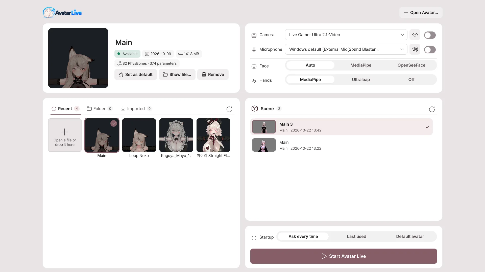
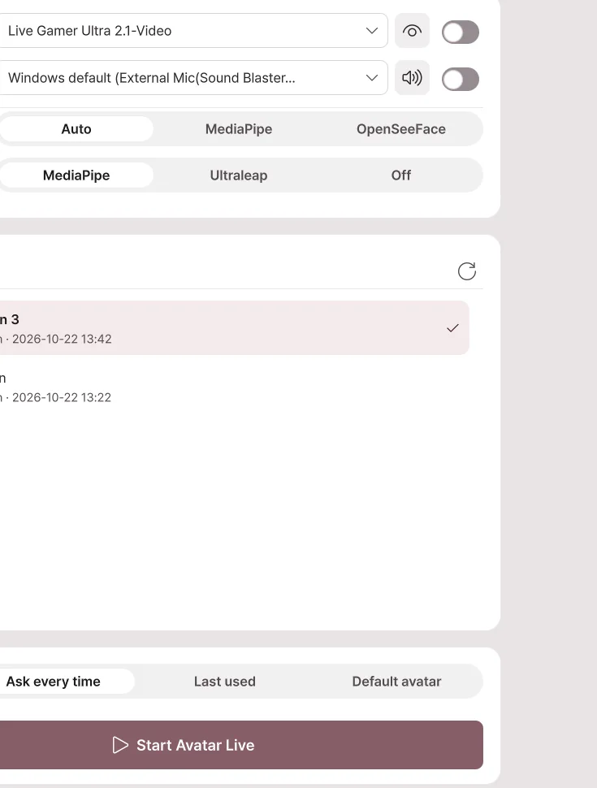
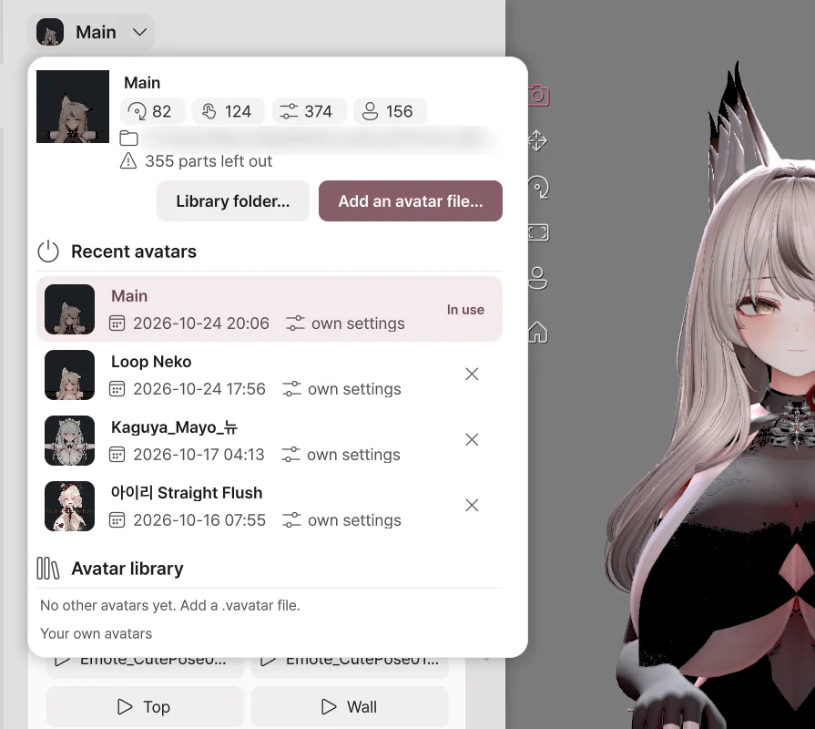

Avatar Library
Register your avatar file, select the character you want to use and the starting scene.
splash screen

| Button/Item | What happens when I press it? |
|---|---|
| Open Avatar | .vavataror.vrmAdd files to the list. You can also drag and drop files into the window. |
| recent | Shows recently used avatars. |
| folder | Shows files in the specified avatar folder. |
| brought | Shows avatars imported into the library. |
| Avatar Thumbnail | Choose a character to start with. |
| set as default | Choose the character you will use when starting as the default avatar. |
| Preview | Check the appearance of the selected character. |
| scene list | Choose a stage setup to start with. |
| Start Avatar Live | Opens the main screen with the selected avatar and scene. |
Choose a device to start with

- Camera: Turn on the switch on the right to use the webcam selected at startup.
- Microphone: When on, lip sync to the selected microphone at startup.
- Face/Hands: Choose how you want to track each part. After running it, you can change it on your device as well.
Avatar to use for next launch
| Startup Settings | Next time you run |
|---|---|
| Ask every time | Choose your avatar directly from the start screen. |
| last avatar | You start with the avatar you used just before. |
| default avatar | Start with the default avatar. |
Change while running

- Tap your avatar name in the upper left.
- Select the avatar you want to replace from the list.
- New files are imported as additional avatar files.
Use this list to replace an existing avatar. Adding an avatar to place more characters in a scene isstudioIt is a separate feature of .
When things don't start well
If you run the program while holding down Shift, you can use Safe Startup, which does not turn on the webcam and microphone. After checking the device issue, try turning it on on your devices one by one.